6 octobre 2026 · Même backend temporaire, mêmes données synthétiques · 1440 × 1000
La V2 possède les pages principales, mais plusieurs contrôles avancés manquent. Les captures montrent le premier écran ; les dialogues et panneaux hors écran sont détaillés dans le rapport fonctionnel. Cliquez sur une capture pour l'ouvrir en taille réelle.
Indicateurs et rapprochement V1 ; comptes et budgets V2.
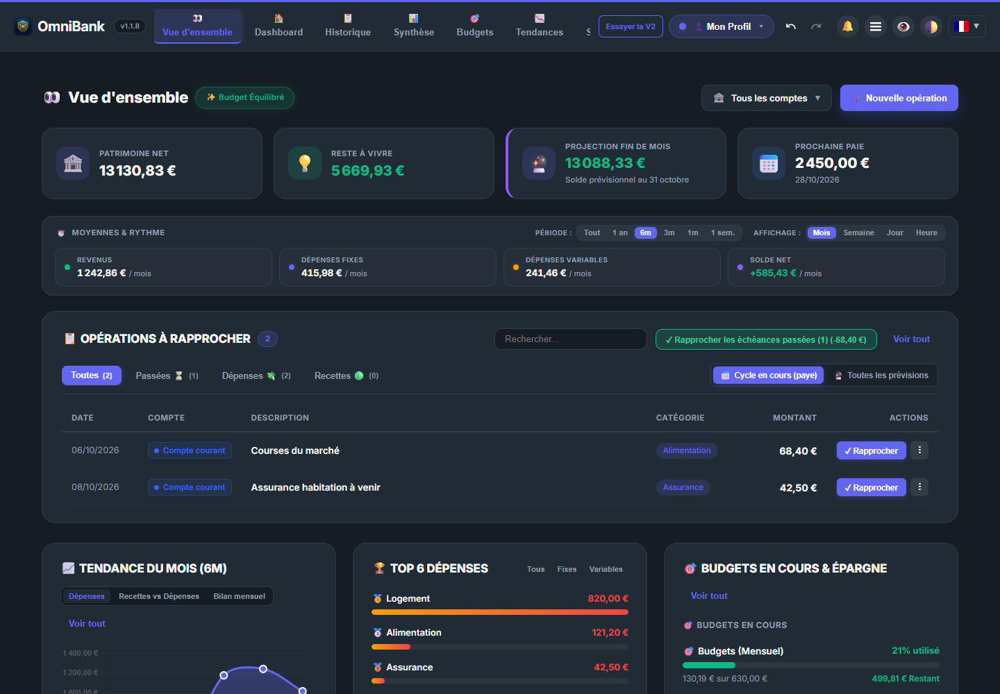
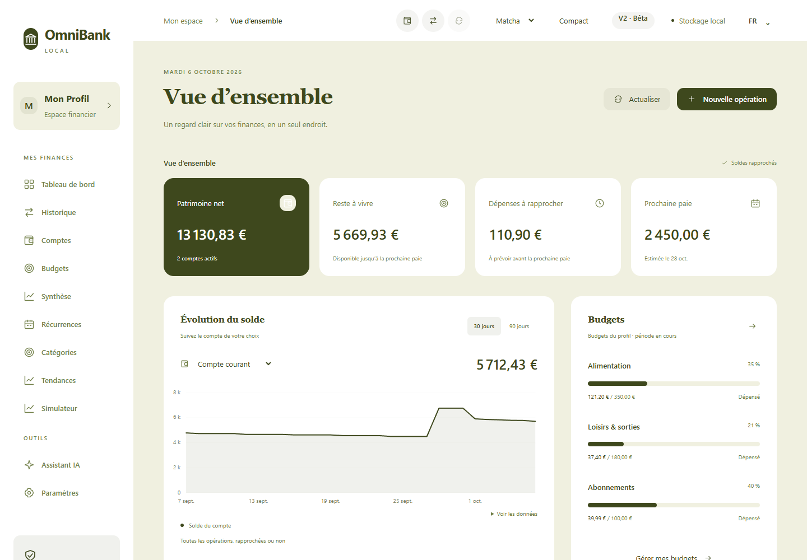
Comparer les actions disponibles pour chaque compte.
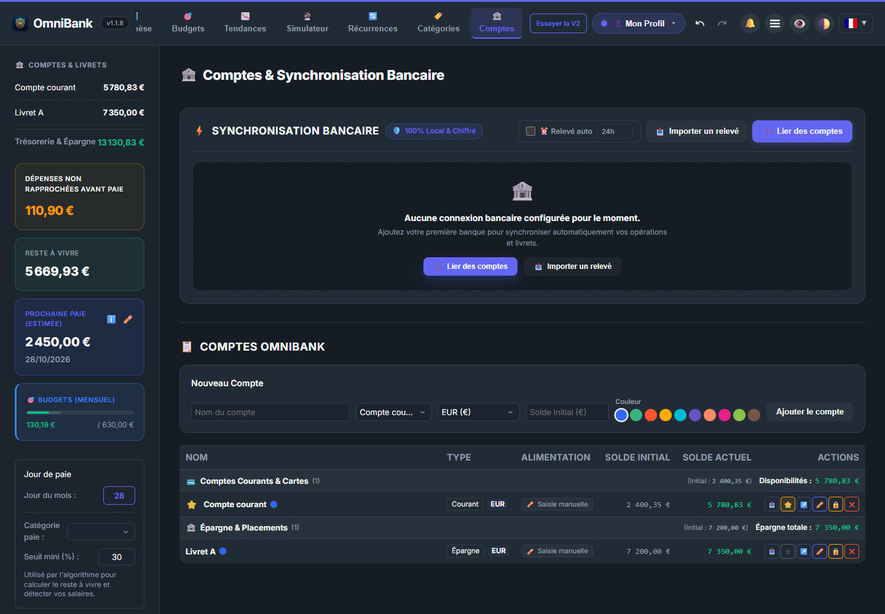
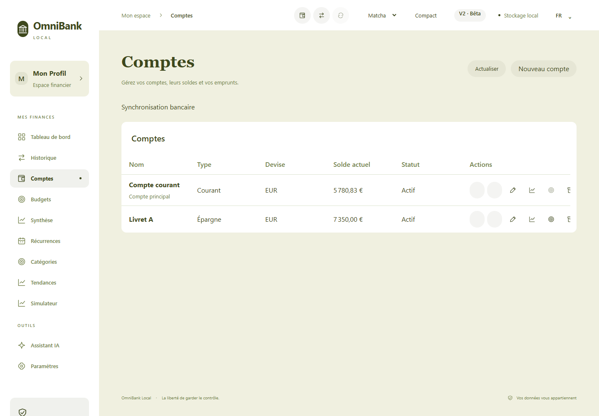
Les enveloppes existent dans les deux interfaces ; les outils avancés restent à migrer.
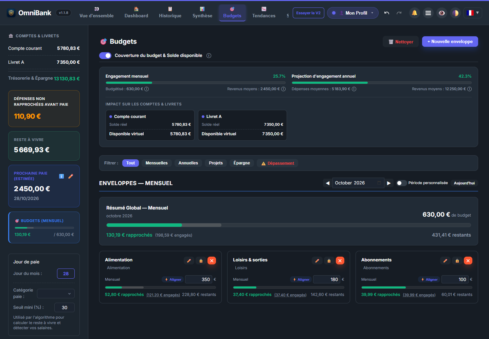
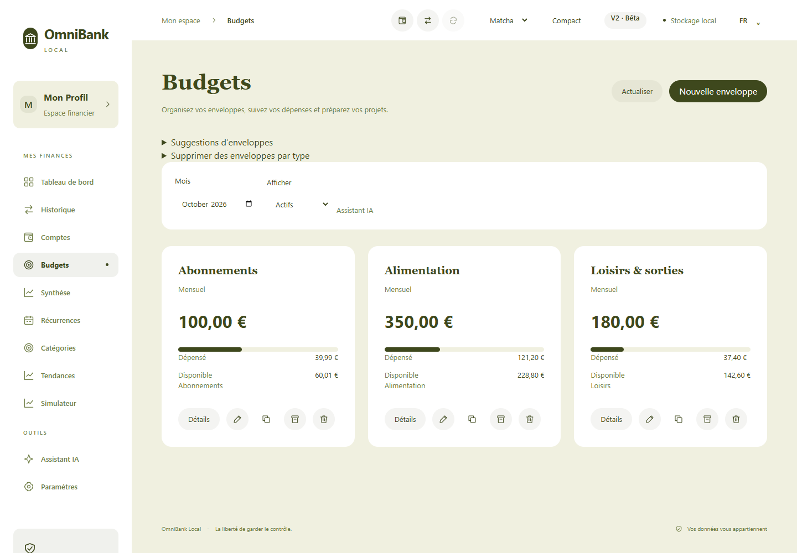
Comparer la densité, les colonnes et les actions.
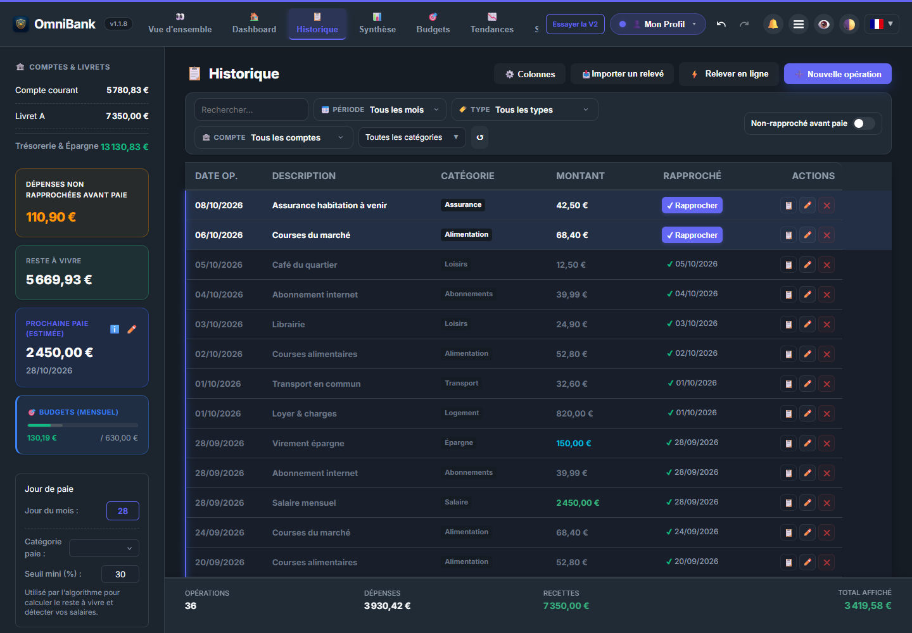
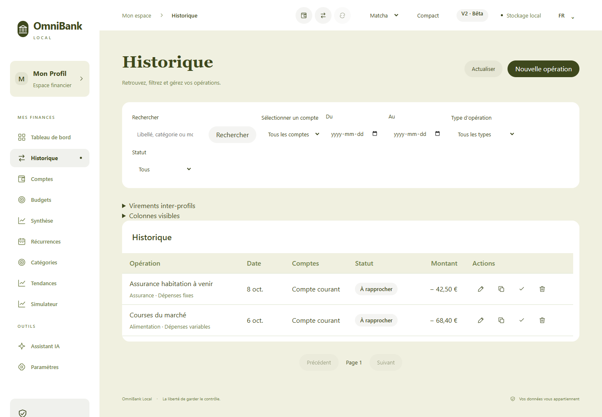
Périodes, alignement, modes et statistiques V1 ; courbe de solde V2.
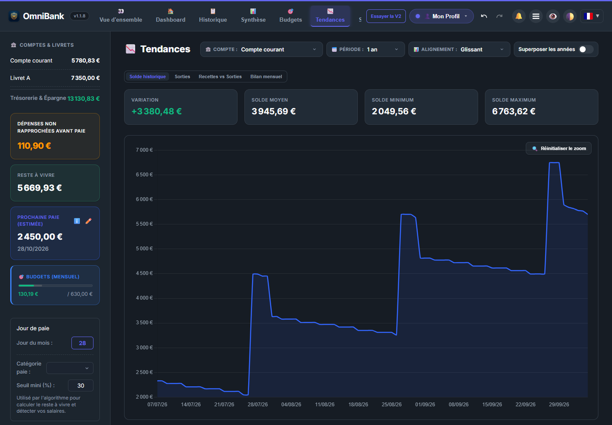
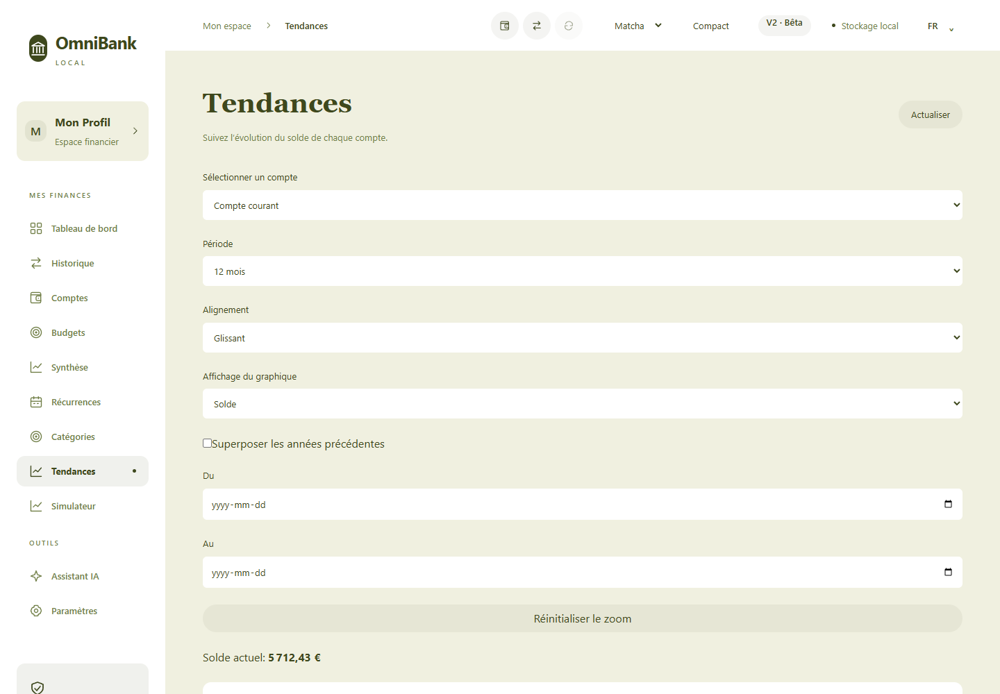
Comparer les contrôles de projection et la gestion des scénarios.
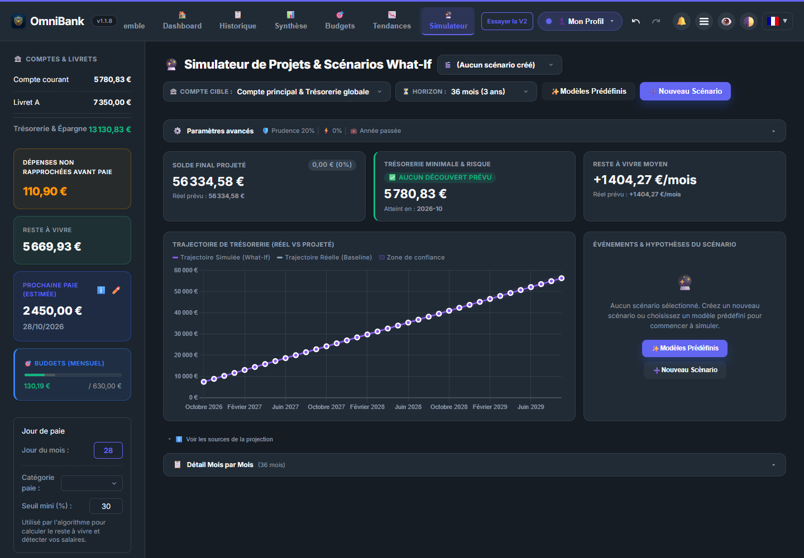
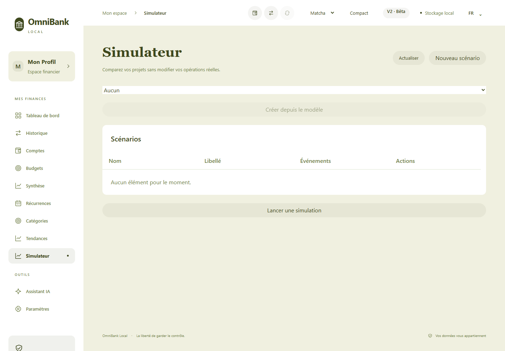